- 01 开篇词：从中间件开始学习分布式.md.html
- 02 走进分布式中间件（课前必读）.md.html
- 03 主流分布式缓存方案的解读及比较.md.html
- 04 分布式一致性协议 Gossip 和 Redis 集群原理解析.md.html
- 05 基于 Redis 的分布式缓存实现及加固策略.md.html
- 06 Redis 实际应用中的异常场景及其根因分析和解决方案.md.html
- 07 Redis-Cluster 故障倒换调优原理分析.md.html
- 08 基于 Redis 的分布式锁实现及其踩坑案例.md.html
- 09 分布式一致性算法 Raft 和 Etcd 原理解析.md.html
- 10 基于 Etcd 的分布式锁实现原理及方案.md.html
- 11 主流的分布式消息队列方案解读及比较.md.html
- 12 搭建基于 Kafka 和 ZooKeeper 的分布式消息队列.md.html
- 13 深入解读基于 Kafka 和 ZooKeeper 的分布式消息队列原理.md.html
- 14 深入浅出解读 Kafka 的可靠性机制.md.html
05 基于 Redis 的分布式缓存实现及加固策略
本文将从 Redis-Cluster 搭建切入，详解集群的创建原理和加固策略。之后，分析集群所存在的几种可靠性问题并给出解决方案，最后，介绍一个集群运维软件的实现方案。
1. Redis-Cluster 搭建
本节将介绍基于 Redis 和 Lettuce 搭建一个分布式缓存集群的方法。为了生动地呈现集群创建过程，我没有采用 Redis 集群管理工具 redis-trib，而是基于 Lettuce 编写 Java 代码实现集群的创建，相信，这将有利于读者更加深刻地理解 Redis 集群模式。
1.1 方案简述
Redis 集群模式至少需要三个主节点，作为举例，本文搭建一个3主3备的精简集群，麻雀虽小，五脏俱全。主备关系如下图所示，其中 M 代表 Master 节点，S 代表 Slave 节点，A-M 和 A-S 为一对主备节点。
按照上图所示的拓扑结构，如果节点 1 故障下线，那么节点 2 上的 A-S 将升主为 A-M，Redis 3 节点集群仍可用，如下图所示：
特别说明：事实上，Redis 集群节点间是两两互通的，如下图所示，上面作为示意图，进行了适当简化。
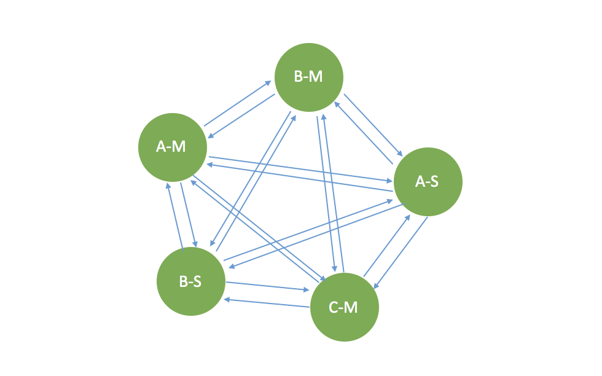
1.2 资源准备
首先，下载 Redis 包。前往 Redis 官网下载 Redis 资源包，本文采用的 Redis 版本为 4.0.8。
接着，将下载的 Redis 资源包 redis-4.0.8.tar.gz 放到自定义目录下，解压，编译便可生成 Redis 服务端和本地客户端 bin 文件 redis-server 和 redis-cli，具体操作命令如下：
tar xzf redis-4.0.8.tar.gz
cd redis-4.0.8
make
最后，编译完成，在 src 目录下可以看到生成的 bin 文件 redis-server 和 redis-cli。
1.3 集群配置
写作本文时，手头只有一台机器，无法搭建物理层面的 3 节点集群，限于条件，我在同一台机器上创建 6 个 Redis 实例，构建 3 主 3 备精简集群。
（1） 创建目录
根据端口号分别创建名为 6379、6380、6381、6382、6383、6384 的文件夹。
（2）修改配置文件
在解压文件夹 redis-4.0.8 中有一个 Redis 配置文件 redis.conf，其中一些默认的配置项需要修改（配置项较多，本文仅为举例，修改一些必要的配置）。以下仅以 6379 端口为例进行配置，6380、6381等端口配置操作类似。将修改后的配置文件分别放入 6379~6384 文件夹中。
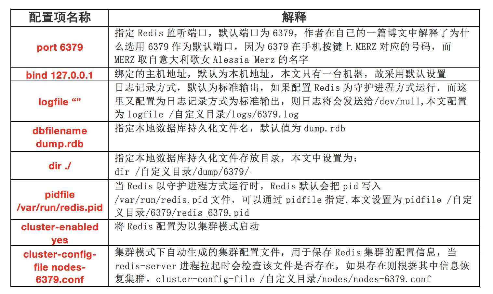
（3）创建必要启停脚本
逐一手动拉起 Redis 进程较为麻烦，在此，我们可以编写简单的启停脚本完成 redis-server 进程的启停（start.sh 和 stop.sh）。
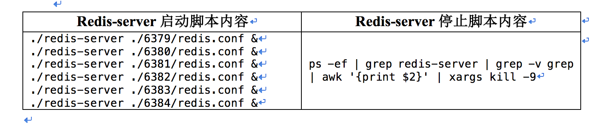
（4）简单测试
至此，我们已经完成 Redis 集群创建的前期准备工作，在创建集群之前，我们可以简单测试一下，redis-sever 进程是否可以正常拉起。运行 start.sh 脚本，查看 redis-server 进程如下：
登录其中一个 Redis 实例的客户端（以 6379 为例），查看集群状态：很明显，以节点 6379 的视角来看，集群处于 Fail 状态，clusterknownnodes:1 表示集群中只有一个节点。
2. 基于 Lettuce 创建 Redis 集群
关于创建 Redis 集群，官方提供了一个 Ruby 编写的运维软件
redis-trib.rb，使用简单的命令便可以完成创建集群、添加节点、负载均衡等操作。正因为简单，用户很难通过黑盒表现理解其中细节，鉴于此，本节将基于 Lettuce 编写创建 Redis 集群的代码，让读者对 Redis 集群创建有一个更深入的理解。
Redis 发展至今，其对应的开源客户端几乎涵盖所有语言，详情请见官网，本节采用 Java 语言开发的 Lettuce 作为 Redis 客户端。Lettuce 是一个可伸缩线程安全的 Redis 客户端，多个线程可以共享同一个 RedisConnection。它采用优秀 Netty NIO 框架来高效地管理多个连接。关于 Lettuce 的详情，后面章节中会详细介绍。
2.1 Redis 集群创建的步骤
（1）相互感知，初步形成集群。
在上文中，我们已经成功拉起了 6 个 redis-server 进程，每个进程视为一个节点，这些节点仍处于孤立状态，它们相互之间无法感知对方的存在，既然要创建集群，首先需要让这些孤立的节点相互感知，形成一个集群。
（2）分配 Slot 给期望的主节点。
形成集群之后，仍然无法提供服务，Redis 集群模式下，数据存储于 16384 个 Slot 中，我们需要将这些 Slot 指派给期望的主节点。何为期望呢？我们有 6 个节点，3 主 3 备，我们只能将 Slot 指派给 3 个主节点，至于哪些节点为主节点，我们可以自定义。
（3）设置从节点。
Slot 分配完成后，被分配 Slot 的节点将成为真正可用的主节点，剩下的没有分到 Slot 的节点，即便状态标志为 Master，实际上也不能提供服务。接下来，出于可靠性的考量，我们需要将这些没有被指派 Slot 的节点指定为可用主节点的从节点（Slave）。
经过上述三个步骤，一个精简的 3 主 3 备 Redis 集群就搭建完成了。
2.2 基于 Lettuce 创建集群代码
根据上述步骤，基于 Lettuce 创建集群的代码如下（仅供入门参考）：
import java.util.ArrayList;
import java.util.List;
import io.lettuce.core.RedisClient;
import io.lettuce.core.RedisCommandTimeoutException;
import io.lettuce.core.RedisConnectionException;
import io.lettuce.core.RedisException;
import io.lettuce.core.RedisURI;
import io.lettuce.core.api.StatefulRedisConnection;
public class CreateCluster
{
public static void main(String[] args) throws InterruptedException
{
createCluster();
}
private static void createCluster() throws InterruptedException
{
// 初始化集群节点列表，并指定主节点列表和从节点列表
List<ClusterNode> clusterNodeList = new ArrayList<ClusterNode>();
List<ClusterNode> masterNodeList = new ArrayList<ClusterNode>();
List<ClusterNode> slaveNodeList = new ArrayList<ClusterNode>();
String[] endpoints = {"127.0.0.1:6379","127.0.0.1:6380","127.0.0.1:6381"
,"127.0.0.1:6382","127.0.0.1:6383","127.0.0.1:6384"};
int index = 0;
for (String endpoint : endpoints)
{
String[] ipAndPort = endpoint.split(":");
ClusterNode node = new ClusterNode(ipAndPort[0], Integer.parseInt(ipAndPort[1]));
clusterNodeList.add(node);
// 将6379，6380，6381设置为主节点，其余为从节点
if (index < 3)
{
masterNodeList.add(node);
}
else
{
slaveNodeList.add(node);
}
index++;
}
// 分别与各个Redis节点建立通信连接
for (ClusterNode node : clusterNodeList)
{
RedisURI redisUri = RedisURI.Builder.redis(node.getHost(), node.getPort()).build();
RedisClient redisClient = RedisClient.create(redisUri);
try
{
StatefulRedisConnection<String, String> connection = redisClient.connect();
node.setConnection(connection);
} catch (RedisException e)
{
System.out.println("connection failed-->" + node.getHost() + ":" + node.getPort());
}
}
// 执行cluster meet命令是各个孤立的节点相互感知，初步形成集群。
// 只需以一个节点为基准，让所有节点与之meet即可
ClusterNode firstNode = null;
for (ClusterNode node : clusterNodeList)
{
if (firstNode == null)
{
firstNode = node;
}
else
{
try
{
node.getConnection().sync().clusterMeet(firstNode.getHost(), firstNode.getPort());
}
catch (RedisCommandTimeoutException | RedisConnectionException e)
{
System.out.println("meet failed-->" + node.getHost() + ":" + node.getPort());
}
}
}
// 为主节点指派slot,将16384个slot分成三份：5461，5461，5462
int[] slots = {0,5460,5461,10921,10922,16383};
index = 0;
for (ClusterNode node : masterNodeList)
{
node.setSlotsBegin(slots[index]);
index++;
node.setSlotsEnd(slots[index]);
index++;
}
// 通过与各个主节点的连接，执行addSlots命令为主节点指派slot
System.out.println("Start to set slots...");
for (ClusterNode node : masterNodeList)
{
try
{
node.getConnection().sync().clusterAddSlots(createSlots(node.getSlotsBegin(), node.getSlotsEnd()));
}
catch (RedisCommandTimeoutException | RedisConnectionException e)
{
System.out.println("add slots failed-->" + node.getHost() + ":" + node.getPort());
}
}
// 延时5s，等待slot指派完成
sleep(5000);
// 为已经指派slot的主节点设置从节点,6379,6380,6381分别对应6382，6383，6384
index = 0;
for (ClusterNode node : slaveNodeList)
{
try
{
node.getConnection().sync().clusterReplicate(masterNodeList.get(index).getMyId());
}
catch (RedisCommandTimeoutException | RedisConnectionException e)
{
System.out.println("replicate failed-->" + node.getHost() + ":" + node.getPort());
}
}
// 关闭连接,销毁客户端，释放资源
for (ClusterNode node : clusterNodeList)
{
node.getConnection().close();
node.getClient().shutdown();
}
}
public static int[] createSlots(int from, int to)
{
int[] result = new int[to - from + 1];
int counter = 0;
for (int i = from; i <= to; i++)
{
result[counter++] = i;
}
return result;
}
}
/*
* 定义集群节点描述类
*/
class ClusterNode
{
private String host;
private int port;
private int slotsBegin;
private int slotsEnd;
private String myId;
private String masterId;
private StatefulRedisConnection<String, String> connection;
private RedisClient redisClient;
public ClusterNode(String host, int port)
{
this.host = host;
this.port = port;
this.slotsBegin = 0;
this.slotsEnd = 0;
this.myId = null;
this.masterId = null;
}
public String getHost()
{
return host;
}
public int getPort()
{
return port;
}
public void setMaster(String masterId)
{
this.masterId = masterId;
}
public String getMaster()
{
return masterId;
}
public void setMyId(String myId)
{
this.myId = myId;
}
public String getMyId()
{
return myId;
}
public void setSlotsBegin(int first)
{
this.slotsBegin = first;
}
public void setSlotsEnd(int last)
{
this.slotsEnd = last;
}
public int getSlotsBegin()
{
return slotsBegin;
}
public int getSlotsEnd()
{
return slotsEnd;
}
public void setConnection(StatefulRedisConnection<String, String> connection)
{
this.connection = connection;
}
public void setClient(RedisClient client)
{
this.redisClient = client;
}
public StatefulRedisConnection<String, String> getConnection()
{
return connection;
}
public RedisClient getClient()
{
return redisClient;
}
}
运行上述代码创建集群，再次登录其中一个节点的客户端（以 6379 为例），通过命令：cluster nodes、cluster info 查看集群状态信息如下，集群已经处于可用状态。
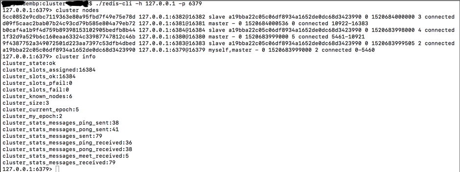
2.3 测试验证
经过上述步骤，一个可用的 Redis 集群已经创建完毕，接下来，通过一段代码测试验证：
public static void main(String[] args)
{
List<ClusterNode> clusterNodeList = new ArrayList<ClusterNode>();
List<RedisURI> redisUriList = new ArrayList<RedisURI>();
String[] endpoints = {"127.0.0.1:6379","127.0.0.1:6380","127.0.0.1:6381"
,"127.0.0.1:6382","127.0.0.1:6383","127.0.0.1:6384"};
for (String endpoint : endpoints)
{
String[] ipAndPort = endpoint.split(":");
ClusterNode node = new ClusterNode(ipAndPort[0], Integer.parseInt(ipAndPort[1]));
clusterNodeList.add(node);
}
//创建RedisURI
for (ClusterNode node : clusterNodeList)
{
RedisURI redisUri = RedisURI.Builder.redis(node.getHost(), node.getPort()).build();
redisUriList.add(redisUri);
}
//创建Redis集群客户端，建立连接，执行set，get基本操作
RedisClusterClient redisClusterClient = RedisClusterClient.create(redisUriList);
StatefulRedisClusterConnection<String, String> conn = redisClusterClient.connect();
RedisAdvancedClusterCommands<String, String> cmd = null;
cmd = conn.sync();
System.out.println(cmd.set("key-test", "value-test"));
System.out.println(cmd.get("key-test"));
//关闭连接
cmd.close();
conn.close();
redisClusterClient.shutdown();
}
测试结果如下：
OK；
value-test
3. Redis SSL 双向认证通信实现
3.1 Redis 自带的鉴权访问模式
默认情况下，Redis 服务端是不允许远程访问的，打开其配置文件 redis.conf，可以看到如下配置：
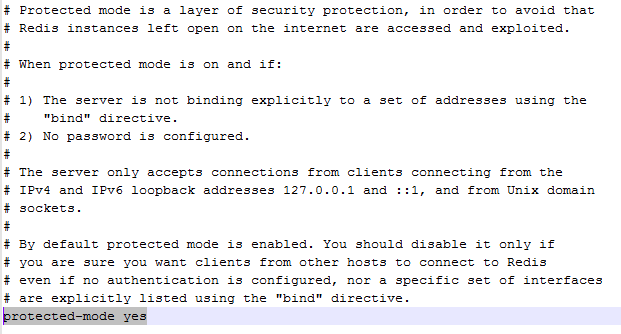
根据说明，如果我们要远程访问，可以手动改变 protected-mode 配置，将 yes 状态置为 no 即可，也可在本地客服端 redis-cli，键入命令：config set protected-mode no。但是，这明显不是一个好的方法，去除保护机制，意味着严重安全风险。
鉴于此，我们可以采用鉴权机制，通过秘钥来鉴权访问，修改 redis.conf，添加 requirepass mypassword ，或者键入命令：config set requirepass password 设置鉴权密码。
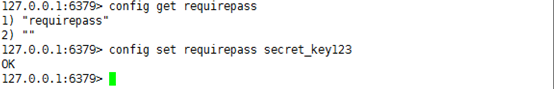
设置密码后，Lettuce 客户端访问 redis-server 就需要鉴权，增加一行代码即可，以单机模式为例：
补充
除了通过密码鉴权访问，出于安全的考量，Redis 还提供了一些其它的策略：
- 禁止高危命令
修改 redis.conf 文件，添加如下配置，将高危原生命令重命名为自定义字符串：
rename-command FLUSHALL "user-defined"
rename-command CONFIG "user-defined"
rename-command EVAL "user-defined"
虽然禁止高危命令有助于安全，但本质上只是一种妥协，也许是对加密鉴权信心不足吧。
- 禁止外网访问
Redis 配置文件 redis.conf 默认绑定本机地址，即 Redis 服务只在当前主机可用，配置如下：
bind 127.0.0.1
这种方式，基本斩断了被远程攻击的可能性，但局限性更明显，Redis 基本退化成本地缓存了。
3.2 SSL 双向认证通信
通过上面的介绍，相信读者已经对 Redis 自带的加固策略有了一定了解。客观地讲，Redis 自带的安全策略很难满足对安全性要求普遍较高的商用场景，鉴于此，有必要优化。就 Client-Server 模式而言，成熟的安全策略有很多，本文仅介绍其一：SSL 双向认证通信。关于 SSL 双向认证通信的原理和具体实现方式，网上有大量的博文可供参考，并非本文重点，因此不做详细介绍。
总体流程
我们首先看下 SSL 双向认证通信的总体流程，如下图所示:
首先，Client 需要将 Server 的根证书 ca.crt 安装到自己的信任证书库中；同时，Server 也需要将根证书 ca.crt 安装到自己的信任证书库中。
接着，当 SSL 握手时，Server 先将服务器证书 server.p12 发给 Client，Client 收到后，到自己的信任证书库中进行验证，由于 server.p12 是根证书 CA 颁发的，所以验证必然通过。
然后，Client 将客户端证书 client.p12 发给 Server，同理， client.p12 是根证书 CA 颁发的，所以验证也将通过。
需要注意的是，从证书库中取证书需要提供密码，这个密码需保存到服务端和客户端的配置文件中。如果以明文形式保存，存在安全风险，因此，通常会对明文密码进行加密，配置文件中保存加密后的密文。然后，客户端和服务端对应的鉴权程序首先对密文解密获得证书库明文密码，再从证书库中取得证书。
实现方案
我们从服务端、客户端三个方面看下 SSL 双向认证通信的实现方案。
- 服务端
Redis 本身不支持 SSL 双向认证通信，因此，需要修改源码，且涉及修改较多，本文仅列出要点，具体实现层面代码不列。
config.c
SSL 双向认证通信涉及的 keyStore 和 trustStore 密码密文、路径等信息可由 Redis 的配置文件 redis.conf 提供，如此，我们需要修改加载配置文件的源码（config.c->loadServerConfigFromString(char *config)），部分修改如下：
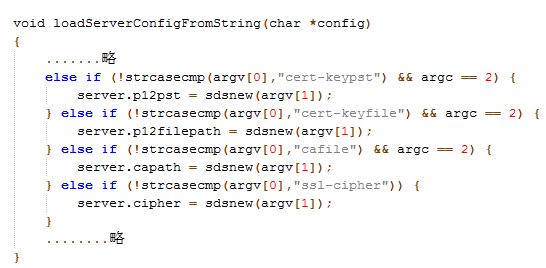
redis.h
Redis 的客户端（redisClient）和服务端（redisServer）都需要适配，部分代码如下：
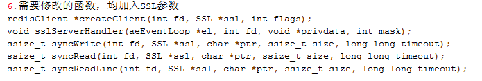
hiredis.h
修改创建连接的原函数：
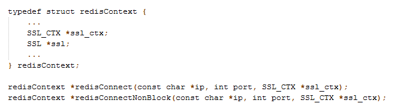
anet.h
定义 SSL 通信涉及的一些函数（实现在 anet.c 中）：
- 客户端
Lettuce 支持 SSL 双向认证通信，需要增加一些代码，以单机模式为例：
// 获取trustStore的密码的密文
String trustPd = System.getProperty("redis_trustStore_password");
// 对密码的密文进行解密获得明文密码，解密算法很多，这里是自研代码
trustPd = CipherMgr.decrypt(trustPd);
// 获取keyStore的密码的密文
String keyPd = System.getProperty("redis_keyStore_password");
// 对密码的密文进行解密获得明文密码
keyPd = CipherMgr.decrypt(keyPd);
// 加密算法套件，此处client_cipher=TLS_RSA_WITH_AES_128_GCM_SHA256
List<String> cipherList = new ArrayList<String>();
cipherList.add(System.getProperty("client_cipher"));
// 构建SslOptions
SslOptions sslOptions = SslOptions.builder()
.truststore(new File(System.getProperty("redis_trustStore_location")),
trustPd)
.keystore(new File(System.getProperty("redis_keyStore_location")), keyPd)
.cipher(cipherList).build();
ClusterClientOptions option = (ClusterClientOptions) ClusterClientOptions.builder()
.sslOptions(sslOptions).build();
// 利用redis-server所绑定的IP和Port创建URI，
RedisURI redisURI = RedisURI.create("100.x.x.152", 6379);
// 创建集Redis集群模式客户端
RedisClient redisClient = RedisClient.create(redisURI);
// 为客户端设置SSL选项
redisClient.setOptions(option);
StatefulRedisConnection<String, String> connect = redisClient.connect();
RedisCommands<String, String> cmd = connect.sync();
// 执行基本的set、get操作
cmd.set("key", "value");
cmd.get("key");
4. Redis 集群可靠性问题
为了便于理解（同时也为了规避安全违规风险），我将原方案进行了适度简化，以 3 主 3 备 Redis 集群为例阐述方案（redis-cluster 模式最少需要三个主节点），如下图所示，其中 A-M 表示主节点 A，A-S 表示主节点 A 对应的从节点，以此类推。
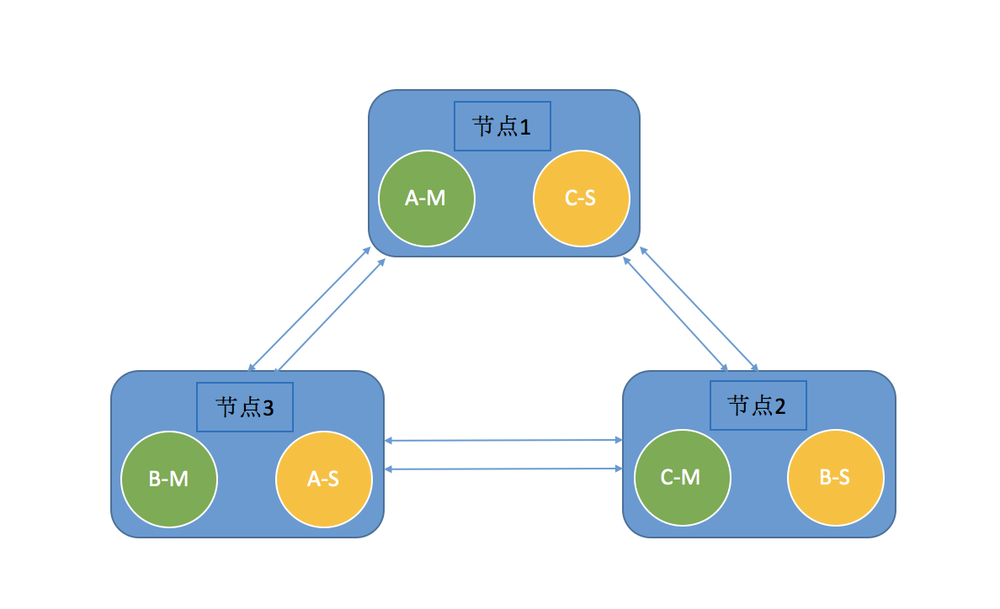
4.1 可靠性问题一
Redis 集群并不是将 redis-server 进程启动便可自行建立的。在各个节点启动 redis-server 进程后，形成的只是 6 个“孤立”的 Redis 节点而已，它们相互不知道对方的存在，拓扑结构如下：
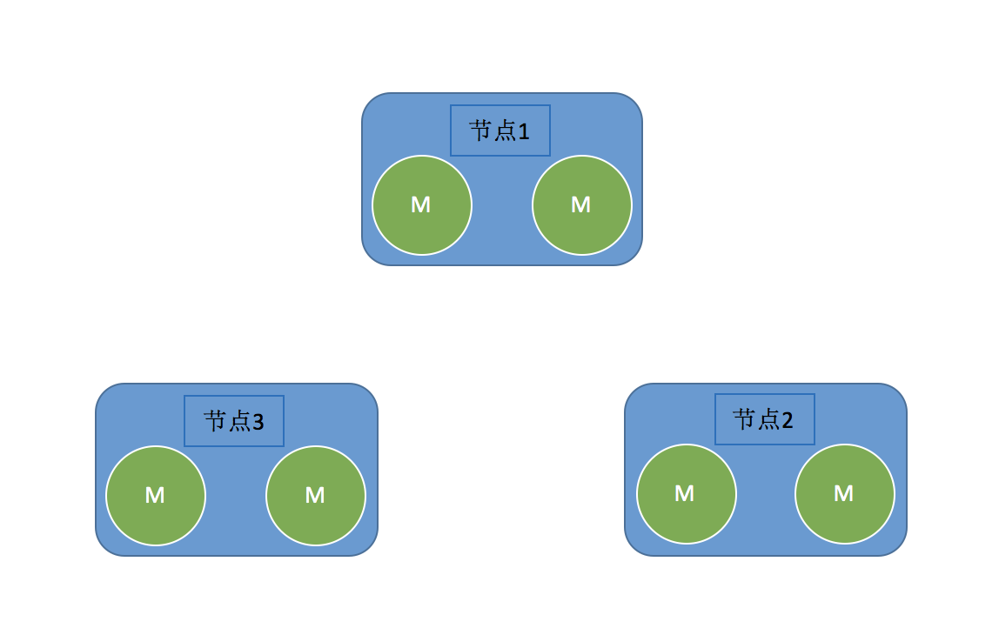
查看每个 Redis 节点的集群配置文件 cluster-config-file，你将看到类似以下内容：
2eca4324c9ee6ac49734e2c1b1f0ce9e74159796 192.168.1.3:6379 myself,master - 0 0 0 connected
vars currentEpoch 0 lastVoteEpoch 0
很明显，每个 Redis 节点都视自己为 Master 角色，其拓扑结构中也只有自己。为了建立集群，Redis 官方提供了一个基于 Ruby 语言的工具 redis-trib.rb，使用命令便可以创建集群。以 3 主 3 备集群为例，假设节点 IP 和 Port 分别为：
192.168.1.3:6379,192.168.1.3:6380,192.168.1.4:6379,192.168.1.4:6380,192.168.1.5:6379,192.168.1.5:6380
则建立集群的命令如下：
redis-trib.rb create --replicas 1 192.168.1.3:6379 192.168.1.3:6380 192.168.1.4:6379 192.168.1.4:6380 192.168.1.5:6379 192.168.1.5:6380
使用 redis-trib.rb 建立集群虽然便捷，不过，由于 Ruby 语言本身的一系列安全缺陷，有些时候并不是明智的选择。考虑到 Lettuce 提供了极为丰富的 Redis 高级功能，我们完全可以使用 Lettuce 来创建集群，这一点在上一节已经介绍过。
4.2 节点故障
三个物理节点，分别部署两个 redis-server，且交叉互为主备，这样做可以提高可靠性：如节点 1 宕机，主节点 A-M 对应的从节点 A-S 将发起投票，作为唯一的备节点，其必然升主成功，与 B-M、C-M 构成新的集群，继续提供服务，如下图所示：
4.3 故障节点恢复
接续上一节，如果宕机的节点 1 经过修复重新上线，根据 Redis 集群原理，节点 1 上的 A-M 将意识到自己已经被替代，将降级为备，形成的集群拓扑结构如下：
4.4 可靠性问题二
基于上述拓扑结构，如果节点 3 宕机，Redis 集群将只有一个主节点 C-M 存活，存活的主节点总数少于集群主节点总数的一半 （1<3/2+1），集群无法自愈，不能继续提供服务。
为了解决这个问题，我们可以设计一个常驻守护进程对 Redis 集群的状态进行监控，当出现主-备状态不合理的情况（如节点 1 重新上线后的拓扑结构），守护进程主动发起主备倒换（clusterFailover），将节点 1 上的 A-S 升为主，节点 3 上的 A-M 降为备，如此，集群拓扑结构恢复正常，并且能够支持单节点故障。
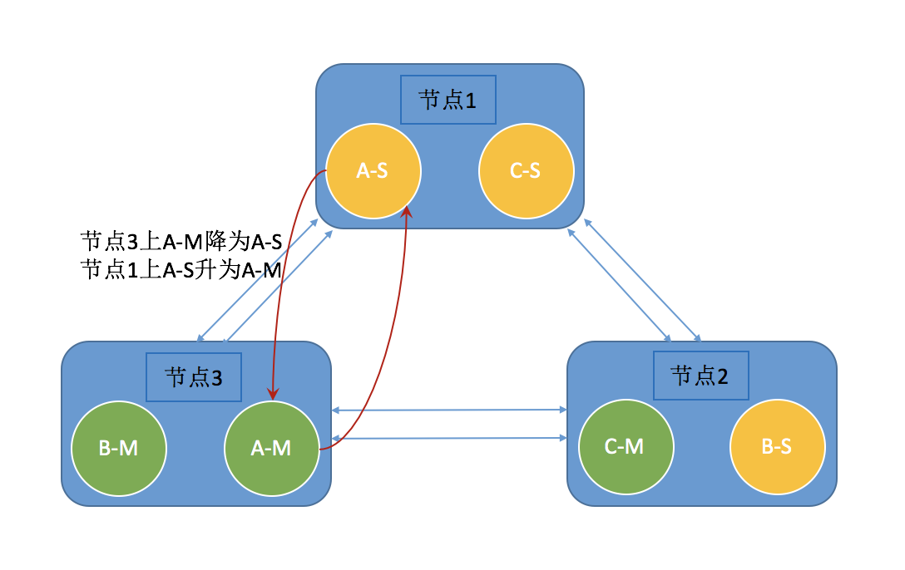
注： Lettuce 提供了主备倒换的方法，示例代码如下：
// slaveConn为Lettuce与从节点建立的连接
slaveConn.sync().clusterFailover(true)
4.5 可靠性问题三
接续 4.1 节，如果节点 1 故障后无法修复，为了保障可靠性，通常会用一个新的节点来替换掉故障的节点——所谓故障替换。拓扑结构如下：
新的节点上面部署两个 redis-server 进程，由于是新建节点，redis-server 进程对应的集群配置文件 cluster-config-file 中只包含自身的信息，并没有整个集群的信息，简言之，新建的节点上的两个 redis-server 进程是“孤立”的。
为了重新组成集群，我们需要两个步骤：
- 将新节点上的两个
redis-server纳入现有集群，通过clusterMeet()方法可以完成； - 为新加入集群的两个
redis-server设置主节点：节点 3 上的两个主 A-M 和 B-M 都没有对应的从节点，因此，可将新加入的两个redis-server分别设置为它们的从节点。
完成上述两个步骤后，Redis 集群的拓扑结构将演变成如下形态：
很明显，变成了问题一的形态，继续通过问题一的解决方案便可修复。
4.6 其它
上面仅介绍了几个较为常见的问题，在实际使用 Redis 的过程中可能遇到的问题远不止这些。在第 05 课中，我将介绍一些更为复杂的异常场景。
5. 基于 Lettuce 的 Redis 集群运维软件设计及实现
不同的应用场景，关注的问题、可能出现的异常不尽相同，上文中介绍的问题仅仅是一种商业应用场景中遇到的。为了解决上述问题，可基于 Lettuce 设计一个常驻守护进程，实现集群创建、添加节点、平衡主备节点分布、集群运行状态监测、故障自检及故障自愈等功能。
5.1 总体流程图
下面是精简后的流程图：
流程图中，ETCD 选主部分需要特别说明一下，ETCD 和 ZooKeeper 类似，可提供 Leader 选举功能。Redis 集群模式下，在各个 Redis 进程所在主机上均启动一个常驻守护进程，以提高可靠性，但是，为了避免冲突，只有被 ETCD 选举为 Leader 的节点上的常驻守护进程可以执行 “守护” 流程，其它主机上的守护进程呈 “休眠” 状态。关于 Leader 选举的实现，方式很多，本文仅以 ETCD 为例。
5.2 实现
集群状态检测
读者应该知道，Redis 集群中每个节点都保存有集群所有节点的状态信息，虽然这些信息可能并不准确。通过状态信息，我们可以判断集群是否存在以及集群的运行状态，基于 Lettuce 提供的方法，简要代码如下：
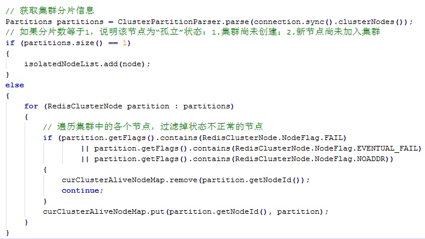
上面代码只从一个节点的视角进行了检查，完整的代码将遍历所有节点，从所有节点的视角分别检查。
Redis 集群创建
大家可参考第二节“2. 基于 Lettuce 创建 Redis 集群”中的内容。
替换故障节点
（1）加入新节点
替换上来的新节点本质上是“孤立”的，需要先加入现有集群：通过集群命令 RedisAdvancedClusterCommands 对象调用 clusterMeet() 方法，便可实现：
（2）为新节点设置主备关系
首先需要明确，当前集群中哪些 Master 没有 Slave，然后，新节点通过 clusterReplicate() 方法成为对应 Master 的 Slave：
slaveConn.sync().clusterReplicate(masterNode);
平衡主备节点的分布
（1）状态检测
常驻守护进程通过遍历各个节点获取到的集群状态信息，可以确定某些 Host 上 Master 和 Slave 节点数量不平衡，比如，经过多次故障后，某个 Host 上的 Redis 节点角色全部变成了 Master，不仅影响性能，还会危及可靠性。这个环节的关键点是如何区分 Master 和 Slave，通常我们以是否被指派 Slot 为依据：
（2）平衡
如何平衡呢，在创建 Redis 集群的时候，开发者需要制定一个合理的集群拓扑结构（或者算法）来指导集群的创建，如本文介绍的 3 主 3 备模式。那么，在平衡的时候，同样可以依据制定的拓扑结构进行恢复。具体操作很简单：调用 Lettuce 提供的 clusterFailover() 方法即可。
参考文献与致谢：
本文的一些图片和文字引用了一些博客和论文，尊重原创是每一个写作者应坚守的底线，在此，将本文引用过的文章一一列出，以表敬意：